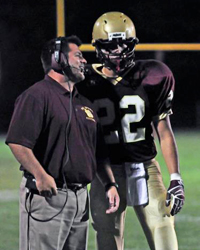

Welcome to the coaches' page. Here you can read about the Big Spring Bulldog coaching staff, their experience, and some fun facts about them.

Mike Berry
Head Coach
High School Attended: Bishop McDevitt HS, Harrisburg, PA (2005)
Playing Experience/Awards: 2004 District 3/6 AAA Champion
College Attended: La Salle University, Philadelphia, PA (2009)
Years Coaching Experience: Bishop McDevitt HS (2006)
Monsignor Bonner HS (2007-2008)
Big Spring HS (2009-Current)
Family Members
Mother - Anna Marie
Father - Pat
Brothers - Pat and Matt
Hobbies/Interests: HS Math Teacher at Big Spring, Basketball Coach, Fantasy Sports Club Advisor
Favorite Sports Teams: Notre Dame Fighting Irish, Miami Dolphins, Pittsburgh Pirates, Pittsburgh Penguins and Chicago Bulls
Bob Baker Jr.
Defensive Coordinator
High School Attended: Big Spring HS, Newville, PA (1987)
College Attended: Shippensburg University, Shippensburg, PA
Years Coaching Experience: Big Spring HS (1988-2006)
Carlisle HS (2007-2008)
Big Spring HS (2011-Current)
Family Members
Wife - Becky
Daughters - Latisha, Emily
Son - Bryce
Grandson - Zachary
Hobbies/Interests: All Sports - Volleyball - Board Games
Favorite Sports Teams: Buffalo Bills
Brad Fry
High School Attended: Big Spring HS, Newville, PA (1999)
Playing Experience: OL/DL
College(s) Attended: Juniata (Played 1 year)
Shippensburg
Years Coaching Experience: 7 years as Varsity Assistant at Big Spring
5 Years as Junior High Coach
Family Members
Wife - Brooke
Children - Chase (5), Izabella (5) and Trey (2)
Brothers - Pat and Matt
Hobbies/Interests: Spending time with family.
Favorite Sports Teams: Philadelphia Phillies, Washington Redskins and Boston Celtics
Micah Artz
High School Attended: Elco (Eastern Lebanon County) HS
Playing Experience: 3 years varsity RB/DE
College Attended/playing experience: West Chester University/ 3 years OLB
Years Coaching Experience: West Chester East HS - 9th Grade Assistant (2001)
Big Spring HS - Defensive Cordinator (2002-2006)
Big Spring HS - 9th Grade Assistant (2009-Current)
Family Members
Wife - Christine
Children - Owen
Hobbies/Interests: Sports and Outdoors
Favorite Sports Teams: West Chester University, Philadelphia Eagles and Philadelphia Phillies
Michal Cook
High School Attended: Liberty High Bealton, VA (2002)
Playing Experience/Awards: 4 year Varsity Letterman/Captain
College Attended/playing experience: Shippensburg University (2007)/4 year D-line player
Years Coaching Experience: Shippensburg University 2007-2009 - Assistant D-Line Coach, Assistant Special Teams Coach and Scout Coach
Family Members
Wife - Tracey Cook (Cheer Coach at Big Spring)
Hobbies/Interests: Football, Basketball, Softball, Fishing, Golf
Favorite Sports Teams: Kansas City Chiefs, Washington Capitals, Balitimore Orioles and Shippensburg Red Raiders
Joe Washington
High School Attended: Northern Burlington CRHS (2009)
Playing Experience: 3 years Varsity at QB and DE
College Attended Shippensburg University (Currently Enrolled)
Years Coaching Experience: Big Spring Junior High (2012- Current)
Family Members
Father - Joe
Mother - Janet
Sister - Sam
Hobbies/Interests: Fishing, Crabbing and Watching Sports
Favorite Sports Teams: Buffalo Bills, Boston Red Sox, Buffalo Sabres
Jim Miwer
High School Attended: Walt Whitman HS, Bethesda MD (1977)
Fork Union Military Academy (1978)
Playing Experience: Played QB at Both High Schools
College Attended/playing experience Ohio Wesleyan University/ 2 years starting QB
Graduated from West Virginia University
Years Coaching Experience: West Perry HS (6 years)
St. Joseph School, Mechanicsburg PA (3 years)
Family Members
Wife - Natalie
Son - Thomas
Daughter - Shelby
Hobbies/Interests: Gardening, Bicycling, Collecting and restoring antique Radios
Favorite Sports Teams: West Virginia Moutaineers
Will Wiser
High School Attended: Big Spring HS (2012)
Playing Experience: 3 year varsity RB
College Attended Shippensburg University (Currently Enrolled)
Years Coaching Experience: None
Family Members
Father - Roy
Mother - Valerie
Sister - Mary
Hobbies/Interests: Being outside and hanging out with friends.
Favorite Sports Teams: Loves to watch all, no specfic favorite.